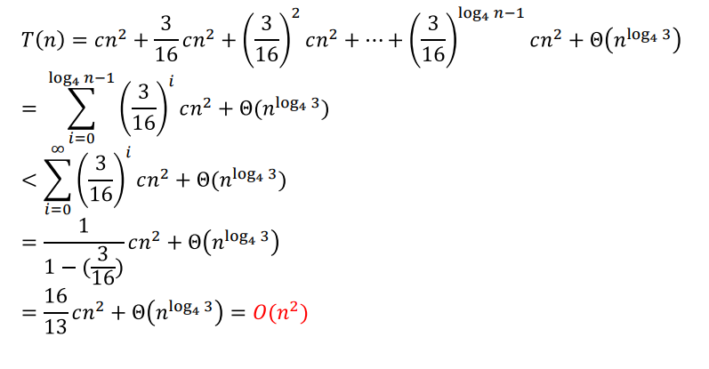
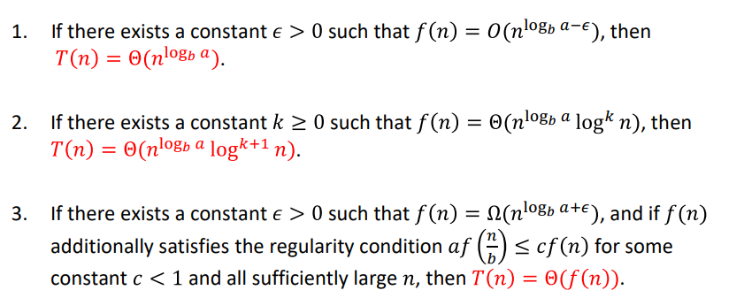

Recurrences
Base case: 문제가 충분히 작아, 재귀없이 직접 처리
Recursive case: 'Divide'동일한 문제의 하위 문제로 나눔(단순화) -> 'Conquer'재귀적으로 해결 -> 'Combine'하위문제를 결합
재귀식(<-divide-and-conquer분석) : 일반적으로 더 작은 입력값에 대한 함수의 값을 설명하는 방정식 (T(n) = 2T(n/2) + θ(n))
A recurrence T(n) is algorithmic if...
n < n0 -> T(n) = θ(1) / n >= n0, recursion
Solving Recurrences
- Substitution Method
- Recursion-Tree Method
- Master Theorem
- Akra-Bazzi Method
Multiplying Square Matrices
두 행렬간 곱 : Cij = 시그마AikBkj / θ(n^3)
T(n) = 8T(n/2) + θ(1) / T(n) = θ(n^3) / same worst-case time complexity
Strassen's Algorithm for Matrix Multiplication
아이디어: x^2 - y^2 = (x + y)(x - y)


T(n) = 7T(n/2) + θ(n^2) / T(n) = θ(n^lg7)
The Substitution Method for Solving Recurrences
Substitution Method
Steps
- Guess the form of the solution using symbolic constants
- Use mathematical induction to show that the solution works, and find the constants
주의 : Avoiding Pitfalls
The Recursion-Tree Method for Solving Recurrences
Recursion-Tree Method
T(n) = 3T(n/4) + θ(n^2)

total cost
The Master Method for Solving Recurrences
Master Method
let a > 0 and b > 1 be constants, and f(n) be a driving function(주도 함수) that is defined and nonnegative on all sufficiently large reals.
Define T(n) = aT(n/b) + f(n)
n^(logb a) : watershed function(3 case)
- watershed function가 driving function보다 점진적으로 더 빠르게 성장
- 두 함수가 거의 동일한 점진적 속도로 성장
- driving function가 watershed function 함수보다 점진적으로 더 빠르게 성장
마스터 정리를 사용할 수 없는 경우, 대체법과 같은 다른 방법을 사용하여 재귀식을 해결